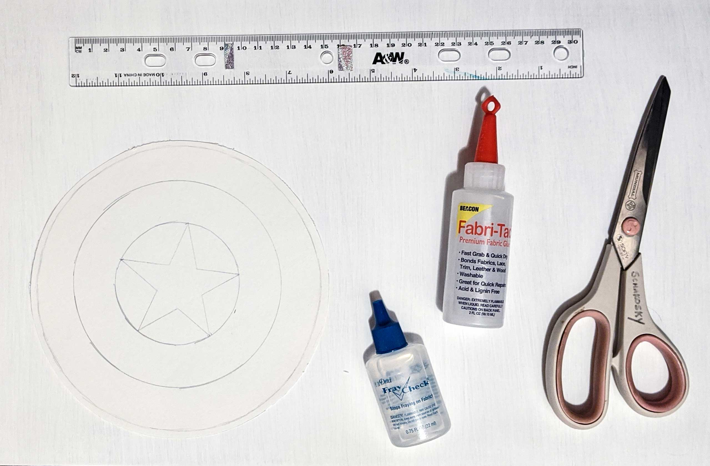
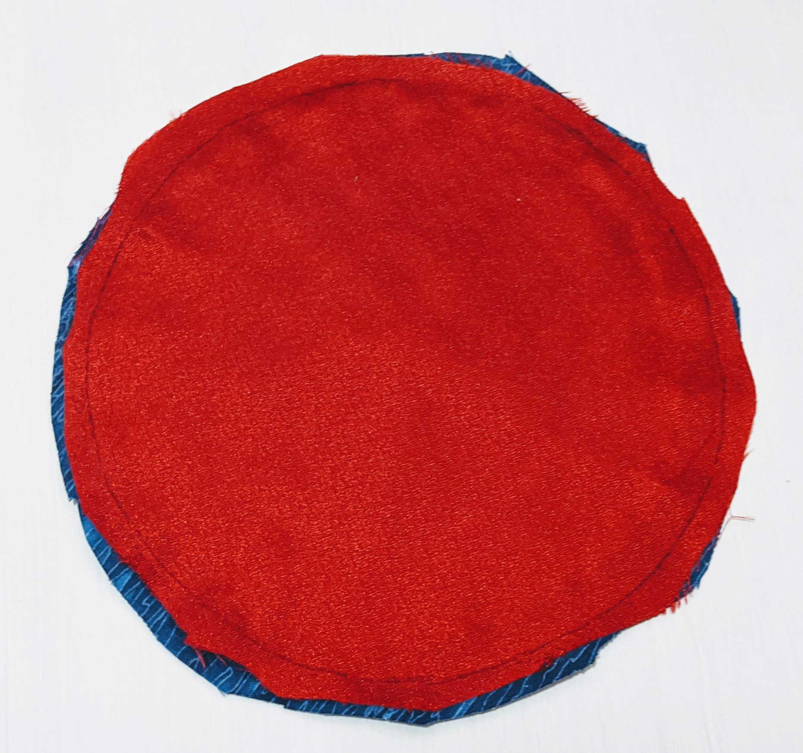
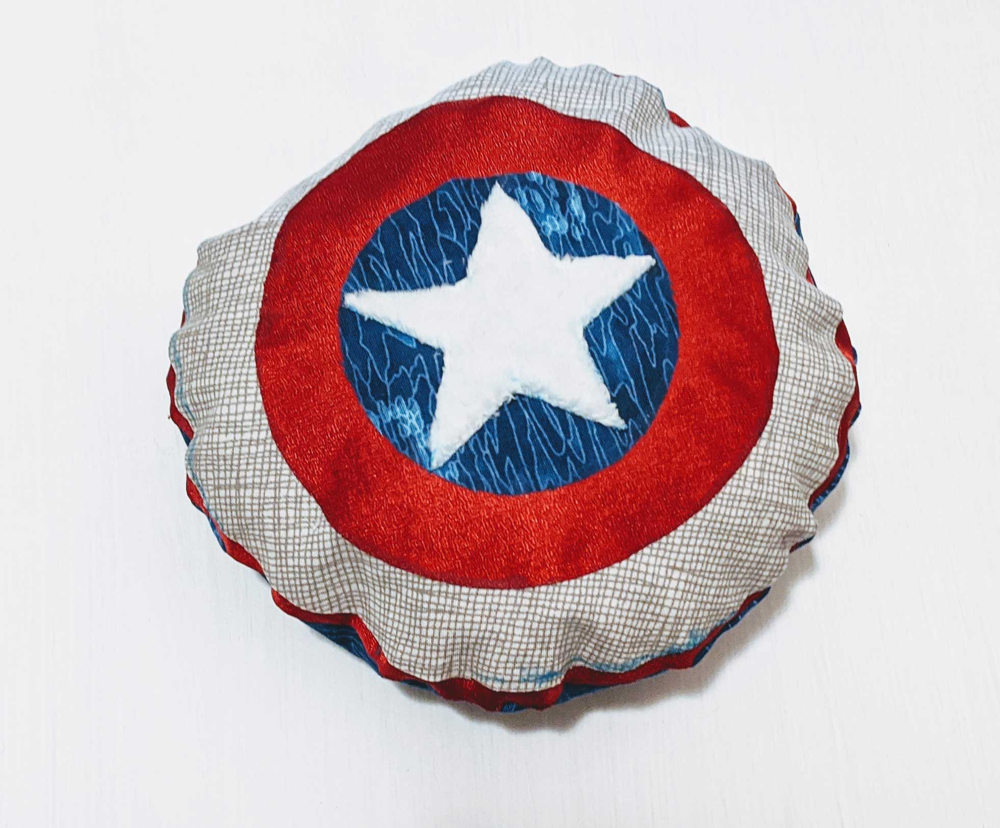

Cap's Shield Squishy
Sew or No-Sew!
Materials

- Shield pattern
- Fabric in red, white and blue, or preferred colors
(I included an extra fabric, white minky, to add some texture)
- Fabric scissors
- Stuffing of choice (I used Poly-fill Premium Fiber Fill)
- Fabri-Tac glue OR thread and needle
- Fray-Check (Optional)
♡
Instructions
- Make yourself a basic pattern for the shield
- Iron fabrics beforehand if needed
- Cut fabric as per measurements, leaving seam allowance for the two biggest circles
- Two 7 1/8" circles, one of red (Front) and one of blue fabric (Back)
- One 6 3/4" circle in white fabric (Outer Circle #1)
- One 4 15/16" circle in red fabric (Outer Circle #2)
- One 2 15/16" circle in blue fabric (Inner Circle)
- One star with 1" long edges in white minky
- Sew, or use your Fabri-Tac to glue, pieces of front together; pin pieces beforehand to keep centered
- Outer Circle #1 to Front
- Outer Circle #2 to Outer Circle #1
- Inner Circle to Outer Circle #2
- Star to Inner Circle
- Pin Front and Back pieces together with right sides together

- Sew Front and Back together, leaving opening to turn fabric and avoiding sewing on seam allowance
- Trim seam allowance, except for around opening, and turn fabric right sides out
- Stuff squishy to preference of squishiness
- Sew opening shut via hand stitching or glue shut via folding seam allowances in half inside squishy and gluing them together
- Enjoy your squishy!

♡